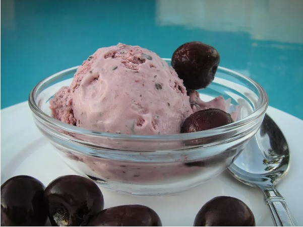

Cherry Ice Cream

The Recipe:
Delicious black cherry ice cream recipe! It's a fabulous, dark shade of magenta and has a tart flavor that kids (and adults) will love.
I have been experimenting with tart cherry juice, and I love this recipe
Recipe by HeidiLynn75
Prep Time: 10 mins
Additional Time: 4 hrs 20 mins
Total Time: 4 hrs 30 mins
Ingredients
- 1 cup heavy cream
- 1 cup vanilla low-fat yogurt
- ½ cup fat free milk
- ¼ cup cherry juice concentrate
- 1 cup frozen dark sweet cherries
- ½ cup white sugar
- 2 teaspoons almond extract
- 1 pinch salt
Steps
- Place cream, yogurt, milk, and cherry concentrate into a blender. Add cherries, sugar, almond extract, and salt. Purée until only
small bits of cherries remain.
- Pour mixture into a 1 1/2-quart ice cream maker and freeze according to manufacturer's instructions, about 20 minutes.
Transfer to an airtight container and freeze until firm, about 4 hours.
Enjoy!